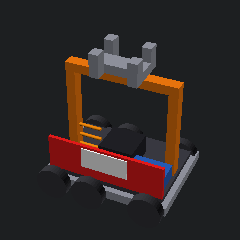

認識 FRC 與隊伍架構
先了解比賽規則、機器人標準結構、頂尖隊伍如何組織分工。
① 比賽結構（2 分 30 秒）
每場比賽分三個階段。每階段機器人能做什麼、得分機制都不同。
Autonomous
Teleop
Endgame
② 機器人標準結構（互動點擊）
點擊機器人各部位的橘色數字，認識每個 subsystem 的功能。
點擊橘色數字
8 個項目都認完才能進下一關
📸 真實比賽現場照片
SVG 是示意，下面是來自 Wikimedia Commons 的真實 FRC 比賽照片：


③ 頂尖隊伍如何分工？
參考 Team 1678 Citrus Circuits（多次世界冠軍）的子隊架構。
🔧 Hardware Design
用 Fusion 360 / SolidWorks 設計零件，輸出工程圖給製造組。
⚡ Hardware Electrical
機械與軟體子隊之間的橋樑。接線、焊接、設計電路保護。
🛠️ Hardware Fabrication
依 CAD 圖用 CNC、車床、銑床、3D 列印製造零件（部分隊伍有 Haas 認證）。
💻 Software Robot
機器人控制程式（自動 / 手動 / 路徑規劃 / 視覺）。常用 Java + WPILib。
📊 Software Scouting
偵查 App 收集對手資料，分析得分策略。Front-end Kotlin / Back-end Python。
♟️ Strategy
分析賽季規則，制定機器人功能優先順序。比賽時下達聯盟戰術。
📢 Business & Media
找贊助商、寫獎項申請、財務管理、社群媒體、網站。
🏆 Impact Award
撰寫 FIRST Impact Award 申請（FRC 最高榮譽，超越機器人本身）。
④ 學習資源：頂尖隊伍的公開資料
這些隊伍開放了大量程式碼、CAD、文件，是學習 FRC 最好的教材：
Team 254 ・ The Cheesy Poofs
FRC 史上奪冠最多的隊伍（5 屆世界冠軍：2011, 2014, 2017, 2018, 2022）。GitHub 開源 2017–2025 完整程式碼，含自家 254Lib 與路徑規劃。
team254.com → GitHub →🖥️ 3D 機器人模型
OpenSCAD 繪製的 FRC 競賽機器人示意模型，展示鋁型材底盤、六輪驅動、升降臂與夾爪、RoboRIO 控制器與電池配置。

🖥️ 模型由 OpenSCAD 參數化建模繪製（結構示意，非特定年度競賽版本）